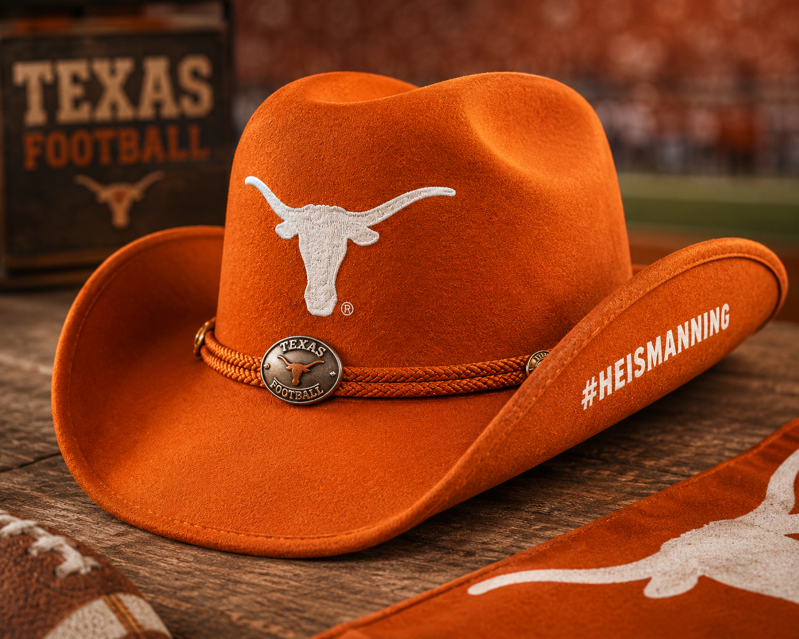

Limited Edition Giveaway Preview
These exclusive giveaway items will be available at select home games this season. The first 10,000 fans through the gates will receive a limited-edition promotional item celebrating Arch Manning's Heisman campaign.

